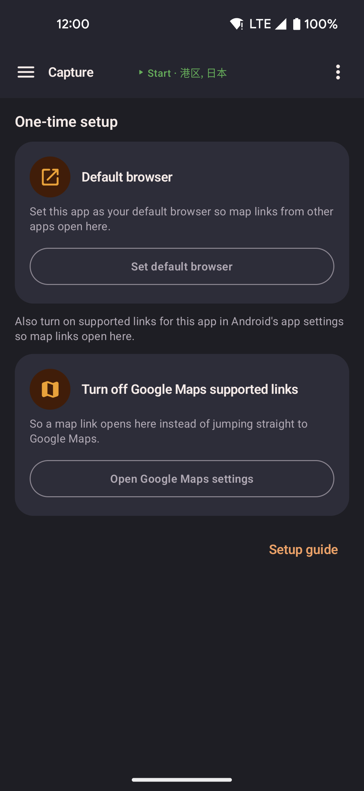

Location links
A location link is a map pin sent from another app or another person. There are two ways locationjoystick can handle one:
- Automatic needs no setup. Tap a link and the app opens on that spot and asks what to do.
- Capture is optional. It collects links into a list without leaving the app you're in, then saves the list as a route.
Sharing a location
Two places in the app send a location out:
- From Favorites, tap the three-dot menu on any saved favorite, then Copy coordinates or Send as message. Both use decimal
lat, lontext, the same format you can paste back in later. - From the map, press and hold any point, then tap Share this location in the menu that appears. That one sends a link that opens this app on the tapped spot.
Routes have their own share option in the three-dot menu: it shows every stop as
lat, lon lines, with buttons to copy or send as a message.
Automatic links
What happens when a link is opened
- The app opens, or comes to the front if it's already running.
- The map screen appears and slides over to the linked location.
- A popup appears asking what to do next:
- Teleport here moves your spoofed position there instantly.
- Walk here walks toward the coordinate at your current speed.
- Walk here via roads follows real roads to get to the coordinate.
- Do nothing closes the popup without changing your position.
Nothing happens on its own. You always confirm what happens next.
Opening links from other apps
You don't need this app's own share button to bring a location in. If another app offers a share location or share place option, you can often choose this app from the list, and it opens the spot directly with the same popup described above.
This works for map links shared by many different apps, including the Maps app's own Share button, which sends a shortened link. This app follows that link to find the real coordinates before it opens. If a shared link or location can't be understood, a short message appears at the bottom of the screen to let you know, rather than doing nothing at all.
Capture mode
Capture collects map links from other apps into a list on this device, then lets you save that list as a route. With Capture turned on, opening a map link keeps you in the app you were using instead of opening Google Maps. The floating widget is not required.
Open Capture
Open Capture from the Home screen or the side menu, next to Map, Routes, and Favorites. The page stays open when you leave for Android settings or another app and come back. You can also press and hold the floating widget's paste button, then tap the Capture shortcut that appears beside it.
Set up Capture
Until this app is your default browser, the Capture page shows only the setup steps below and a Setup guide button that opens this section. Follow the steps in order.

- The setup steps are all you see until this app is your default browser. The rest of the page appears once setup is done.
-
Tap Default browser. Set this app as your default browser in the screen that opens.
On Samsung phones, a popup that only says "set as default browser" often does nothing — open Android's default apps settings instead and pick this app there. - Go back to the Capture page. It rechecks automatically and moves to the next step.
- In this app's Android settings, turn on supported links. The app can't check this step, so double check it yourself.
- Tap Turn off Google Maps supported links and turn off "open supported links" for Google Maps. Skip this and Maps links go straight to Maps — this app never sees them.
Once the app is your default browser, the setup steps disappear and the Capture mode switch, List and Jump, the captured list, and Save as route appear. Any points you already captured come back too.
To turn Capture back off later: tap the three dots at the top of the page, choose Restore default browser, tick the confirm box, and tap Restore. Capture turns off and Android's default apps screen opens so you can pick your usual browser again — this app can't switch it back for you. Your captured points and your pass-through browser choice stay. The same three-dot menu has Setup guide too.
Choose what captured links do
- Turn on Capture mode.
- Choose List to add each tapped location to your list, Jump to move there right away, or check both.
- If the list already has points, choose Clear to start fresh or Keep to add to what's there.
With Capture mode off, or with both List and Jump unchecked, links pass through instead — nothing is collected and your location doesn't change. Tap Pass-through to pick which installed browser handles those links. Google Maps links always try the Google Maps app first while Capture mode is off, even if its supported-links switch is off; if Maps isn't installed, your chosen browser opens them instead. The browser list refreshes when you return from Android settings.
Collect and save a route
- With setup done, tap a map link in another app.
- List adds the point, Jump moves you there, both do both — instantly, with a short confirmation message. The other app stays open.
- Open Capture to see your list, shown in an orange box in the order you captured each point.
- Use Copy, Last (removes the most recent point), or Clear on the row above the route name field.
- Type a route name.
- Tap Save as route — needs at least two points. The route appears under Routes.
Optimize proximity is on by default when you copy or save — it reorders points so each stop sits near the last one, the same option used when pasting coordinates into a route. Turn on Keep original instead to save them in capture order.
Tapping the same link twice in a row does not add it twice. Tapping an earlier point again later does add it again, so a loop in the route is allowed.
URL format
The canonical link format is:
https://locationjoystick.shrtcts.fr/?lat=LAT&lon=LON| Parameter | Type | Valid range | Description |
|---|---|---|---|
lat | decimal | −90 to 90 | Latitude |
lon | decimal | −180 to 180 | Longitude |
Example:
https://locationjoystick.shrtcts.fr/?lat=35.6762&lon=139.6503For third-party tools
If you're building automation, scripts, or other tools that open coordinates in locationjoystick, you can build the link yourself. No key or account sign-in is needed.
- Both
latandlonare required. Missing either silently drops the link. - Coordinates outside the valid range are rejected and the link is ignored.
- Normal URL encoding rules apply, though coordinates only use plain characters anyway.
A custom link format is also available for connecting directly between apps:
locationjoystick://open?lat=LAT&lon=LONBoth link formats work the same way. Use the regular web link (https://) when sharing with other people.